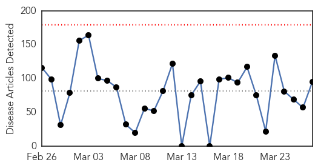
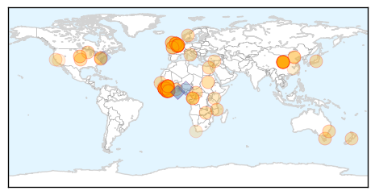

Mumps
30-Day Web Trend
0 alerts, 0 warnings

30-Day Twitter Trend
0 alerts, 0 warnings

Article Locations

Article Confidences

Top Articles:
-
No articles found for Mar 27, 2015
Top Tweets:
-
No tweets found for Mar 27, 2015
Ebola
30-Day Web Trend
0 alerts, 0 warnings

30-Day Twitter Trend
0 alerts, 0 warnings

Article Locations
Article Confidences
Top Articles:
- 1.000
- Ebola Virus Vaccines Pass Safety Trial; Set for Release Soon?
- 1.000
- Three New Ebola Cases in Liberia
- 1.000
- A Risk For Europe?
- 1.000
- Ebola outbreak: Sierra Leone's capital deserted at start of new three-day anti-Ebola lockdown
- 1.000
- Ebola Whole Virus Vaccine Shown Effective, Safe in Primates
- 0.999
- Study Shows Ebola Virus Is Unlikely To Become More Dangerous
- 0.999
- Ebola in West Africa: The Importance of "Getting to Zero"
- 0.999
- Ebola-stricken Sierra Leone starts countrywide lockdown
- 0.999
- Sierra Leoneans to stay home in final push to stop Ebola
- 0.999
- S.Leone in new anti-Ebola lockdown
- 0.999
- Three-day quarantine begins in desperate attempt to curb new Ebola cases
- 0.999
- Sierra Leone Under 3-Day Ebola Lockdown
- 0.999
- Sierra Leoneans to stay home in final push to stop Ebola - MyNorthwest
- 0.999
- Red Cross volunteer returns from overseeing Sierra Leone Ebola treatment centre
- 0.998
- Ebola: nationwide lockdown begins in Sierra Leone
- 0.998
- Vaccine for apes could halt the spread of Ebola
- 0.998
- CAR: Ebola virus disease Preparedness DREF Preliminary Final Report operations n° MDRCF018 - Central African Republic
- 0.997
- Norway adjusts its Ebola response - Sierra Leone
- 0.996
- Ebola on the rampage again
- 0.996
- Lowest weekly total of Ebola cases in 2015 reported: WHO
- 0.996
- Ebola vaccines appear safe and successful, say US researchers
- 0.996
- Lockdown bid to stamp out Ebola
- 0.995
- New national lockdown ordered to curb Ebola spread in Sierra Leone
- 0.995
- China's aid to eradicate Ebola in Sierra Leone is exemplary - Xinhua
- 0.995
- Africa Focus: China's aid to eradicate Ebola in Sierra Leone is exemplary
- 0.994
- WHO: Waning interest is biggest risk in race to overcome Ebola -35867
- 0.994
- Sierra Leoneans to stay home in final push to stop Ebola
- 0.994
- Christian Aid warns Ebola crisis is 'not yet over'
- 0.993
- Military health worker leaves hospital
- 0.993
- Lockdown bid to stamp out Ebola
- 0.993
- UK nurse cured of Ebola with new treatment
- 0.992
- Ebola crisis not yet over
- 0.990
- Ebola in the UK: Nurse who contracted Ebola thanks 'incredible' NHS team that cured her
- 0.990
- Ebola doctors come home: AfDB joins ECOWAS and Government of Côte d’Ivoire in welcome ceremony
- 0.989
- British doctor says fight against Ebola is not over
- 0.988
- British nurse cured of Ebola after receiving new treatment, Europe News & Top Stories
- 0.987
- Conservation Group Seeks Sources of Ebola Virus
- 0.985
- Nurse with Ebola cured by new drug
- 0.984
- Corporal Anna Cross cured of Ebola says 'Eating strawberries saved my life'
- 0.984
- Ebola: Sierra Leone to begin 3-day lockdown
- 0.983
- Liberia’s almost last Ebola patient grateful but still grieving
- 0.982
- Liberia: Suspected Ebola Case in Clara Town
- 0.980
- Baby boom boosting black bear population in Md.
- 0.980
- Japanese shipping exec gets 18 months in price-fixing scheme
- 0.978
- Hamilton man leads UK response to Ebola crisis in Sierra Leone
- 0.973
- Ten shocking animal diseases that may threaten species
- 0.970
- Sierra Leone: Ebola lockdown should renew focus on safe burials
- 0.969
- RFA Argus awarded rare accolade for Ebola fight as she sails home to Falmouth
- 0.966
- Ebola takes worst toll on babies, other young kids
- 0.961
- Two Ebola vaccines shown safe as next step pondered
Showing top 50 articles...
Top Tweets:
- 0.912
- Ebola Update: 24927 confirmed probable and suspected cases reported in 3 most affected countries with 10338 deaths. EbolaResponse
- 0.895
- New Ebola case in Liberia & continuing ID of cases in Sierra Leone Guinea highlight how vulnerable the region remains.
- 0.859
- Progress made in year since CDC first responded to Ebola outbreak in W. Africa but efforts must continue until there are zero new cases.
- 0.811
- Surveillance and Outbreak Resp Mgt System (SORMAS) to support the control of the Ebola outbreak in West Africa http://t.co/7aRJNsjGer
- 0.753
- RT: Bonne nouvelle : la chaîne de contamination du virus Ebola a été brisée à Dalaba en moyenne Guinée ! http://t.co/V7HIYS42vq
- 0.735
- Conservation Group Seeks Sources of Ebola Virus - Voice of America http://t.co/0NpNwYWgRL ebola EVD
- 0.714
- Two experimental Ebola vaccines pass safety test in African trial - Reuters http://t.co/CMqSvMoGTK ebola EVD
- 0.666
- Working w/ partners we are strengthening public health systems to prevent Ebola & other outbreaks from taking hold in the future.
- 0.663
- Liberia's Almost-Last Ebola Patient Grateful but Still Grieving - Voice of America http://t.co/bssacP8Kk1 ebola EVD
- 0.648
- This is just about right! Not enough Ebola cases?
- 0.640
- [TIME] American Patient With Ebola Has Condition Upgraded EbolaNews
- 0.592
- Why NIH's Anthony Fauci is treating Ebola patients himself - Science AAAS http://t.co/lRLhkd37aK ebola EVD
- 0.565
- [NYTIMES] Ebola Virus in Latest Outbreak Does Not Show Unusual Mutations Study Finds EbolaNews http://t.co/uzogZk2983
- 0.561
- Mutation rate and genotype variation of Ebola virus from Mali case sequences http://t.co/rkgHywz9EL
- 0.534
- RT: Ebola Virus in Latest Outbreak Does Not Show Unusual Mutations Study Finds http://t.co/5g1W3x9kZK